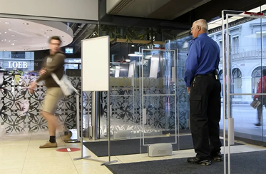

Grossbritannien will Brexit-Gespräche nun doch weiterführen
Die gestoppten Gespräche über einen Handelsvertrag mit der EU sollen nun doch fortgesetzt werden.
WIRTSCHAFT
Bezahl-App
Zahl verdoppelt: Twint registriert drei Millionen Nutzer
PANORAMA
Überlastete Netze
Videos auf einen Viertel ihrer Grösse schrumpfen
SPORT
Round-up Champions League, A&B
Reals Fehltritt gegen Donezk
WIRTSCHAFT
Wetter
Umstrittene Kostenfrage
Verordnetes Homeoffice: Wer zahlt die Druckerpatrone?
Seco-Prognose 2020
Kommt es doch nicht ganz so schlimm?

Detailhandel und Corona
Läden in der Schweiz leiden besonders
Drittes Quartal
Corona als Fluch und Segen für Roche
UBS-Chef geht
Stabilisator Sergio Ermotti sagt Ciao
KOMMENTAR ZU
Schweiz und China
Das opportunistische Schweigen ist passé
Die Schweiz muss China wegen Menschenrechtsverletzungen deutlicher kritisieren. Und sie sollte die Sanktionsregelung der EU übernehmen.
Claudia Blumer | 18.01.2021
Verkauf der Postbank
Die Privatisierung der Postfinance hat kaum eine Chance
Die Postfinance verliert Geld und Kunden. Aber die jetzt geplante Privatisierung bringt keine Rettung.
Jorgos Brouzos | 18.01.2021
Raffainers Abwerbung
Was für eine Doppelmoral des SC Bern!
Als Treiber der Ligareformen beschwören die Berner das Wohl aller. Nun jagen sie dem HC Davos den Sportchef ab. Das zeigt: Solidarität ist nur eine Floskel.
Simon Graf | 19.01.2021
Corona-Egoismus
Darf man noch Ferien von der Pandemie machen?
Schweizer Promis lümmeln dieser Tage am Strand oder die Nachbarn geniessen die Skipiste. Müssen wir uns das gefallen lassen?